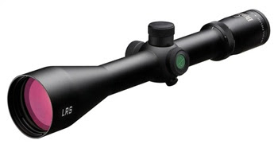

With an ardent tip of the boonie cap to AtlasShrug, here is his praxis on rifle scopes.
Mike
III
A good while back Mike put out a call for a Praxis article on scopes for rifles many of the III percent might carry. This was based on a reader’s request. I started a contribution, but life got in the way and it was set aside. I finally dug it up and updated it a bit.
For my own uses, I’ve done a fair amount of research on such scopes over the past few years. Right now, it’s too much (and too unorganized) to post here in full, but I can offer up some points that may help those needing such advice.
The original request:
"Once you have finished your remaining chapters, recommend a Praxis article on inexpensive, but quality glass for rifles. Focus should be on two categories: 1) - CQB, low-power, and 2)- mid-range, 2x7 or 3x9 (or 4x or 6x fixed). You might want to see what your readers can come up with on the blog sites for recommendations. Scopes can cost as much or more than the basic rifle."
Introductory comment:
First, while the terms “inexpensive” and “quality” can be mutually exclusive when discussing rifle scopes, both terms are subjective. Thus each must judge for themselves what constitutes quality and just what is inexpensive for battle rifle scopes.
The final measures will be what you need, and what you can afford. Remember that this is a serious set up and not a shooting game gun - not even a hunting gun.
Yes, a few “cheap” discount brand scopes have come out with some desirable features. You might want to save money and take your chances with these, but personally I’ll pass. I’m not about to put a questionable bargain scope on a rifle that I may fight for my life with.
Thus my advice is to ask yourself “what’s my life worth?” and then buy as much quality as you can afford. This rig you must trust. It is not the place for a $40 BSA scope in a cheap mount. Research, then ponder, and then buy what you can afford – but buy until it hurts, at least a little.
Observations:
While many types of scopes will do for the serious rifleman in the 21st century, for a III percenter facing the choices and challenges that lie ahead, my advice is to get a quality scope with some kind of ballistic reticle. To me, this is a base level. The next desirable feature is some range estimating capability in the reticle. The other main desirable upgrade is a lighted reticle. A scope with these features can be worth its weight in gold when properly put to use.
Why a ballistic reticle (aka BDC – Ballistic Drop Compensator)? The simple answer is because they are more versatile than the standard hunting “duplex” reticle. They are not perfect, but they offer the average rifleman more options and flexibilities, especially when they don’t have time for extensive testing and training.
At this point, some of you are thinking “what about a mil-dot scope?” Well, they have their place, but IMHO are a limited and dated solution. As you do your research on ballistic reticles, you’ll find many “keyboard commandos” and “sniper typers” who will bash them while singing the praises of the mil-dot. The normal mantra is “a BDC is only good for one reticle and one load while the mil-dot will do it all.”
While I like mil-dots in general, for my purposes and for the needs of many III percenters, IMHO an appropriate BDC is simply a better overall solution. I consider a good BDC reticle with ranging capabilities to be an improvement over the mil-dot. Many mil-dot trained shooters won’t agree and resist such change. If this applies to you, no problem. Your mil-dot can do you great service and if you’re good with it I’d have no problems with you backing me up. I’ll not try to convert you. For me though, I’m keeping my BDC solutions and I try to get a bit better with them every time I take it to the field, or to the range. Find what works for you, then move on.
Why some ranging capability? Clearly, targets of opportunity in the field don’t stand at yard markers on a manicured rifle range at Camp Perry. Odd and unknown distances are the rule. While you ideally have a buddy with a Leica range finder next to you, acting as spotter and ranging every target, don’t count on such luxury. You’ll likely need to have some method of estimating distance as you look at the target through the scope. In my research, this has been the most difficult need to find a satisfactory solution for. As noted previously, in the past the mil-dot was the answer for this. Today, we have more options, some in the MOA world (which many in the US of A find much easier to work with than mil based calculations). Do lots of thinking and research in this area, as personal preferences can be significant in guiding you to your solution.
Why a lighted reticle? Well, bad things tend to happen more in the dark, or in dimly lit places. While I think this feature is important, I do place it third in my priority list. If you have needs tending towards more night usage, you might place it higher. In particular, if primarily setting up a rifle for close range work, then a well lit, easily identifiable reticle may be essential.
A note on forward mounting: All quality “scout” (IER - intermediate eye relief) and some pistol (LER – long eye relief) scopes work well for forward mounting on rifles. Personally, I think the best place for an optic on a fighting rifle is well forward, as you maintain more overall field of view – critical in a fight where seeing means living. However, I will admit that this is perhaps a strong preference primarily because of my long love of “scout rifles” combined as with the fact that my personal battle rifle solution is the venerable Garand, which is only well scoped via an AmegaRanges forward mount. (See the CMP or AmegaRanges to obtain such a mount.)
Thus I will note several pistol scope solutions that I think have merit.
Additionally, while I have only limited experience with them personally, it is worth noting that many of the modern 1X (or very low magnification levels) “dot” sights are finding good use in combat. While they excel in CQB confrontations, some of the better of them also have features that allow them to extend their utility for a few hundred yards. The ACOGs, Elcans, Aimpoints, etc. are examples of the breed. They have their place as well.
For traditional receiver mounting implementations, I think that a quality, robust variable power scope is the way to go. A power range of 2x – 7x, 3x – 9x, or 4.5x – 14x is probably a good fit – one turns it all the way down for patrol or close range use, then adjusts it to maximum power for careful and deliberate shot placement. That’s versatile, which is what we need to be. Specialized rigs have their place, but that is not the context discussed here. We want the 21st Century Minute Man to be armed with a rifle that will cover 90% or all demands that could be placed on him. So armed, the rest is up to the individual and his own mettle.
Some scope lines and models to consider, with a few comments on each:
Burris - Ballistic Plex:
This was the first affordable and popular ballistic reticle offered by a major US market supplier. While a bit minimalist, it works fairly well. The reticle is simple and not too busy (some folks have trouble with the more complicated reticles). It is also available in a 2x-7x pistol scope, which I consider very valuable (more on that later).
The ability to range with the Ballistic Plex is not very good. If offers a bit more than a standard duplex, but not much more. One potentially attractive solution is Burris’ Ballistic Mil-Dot, which combines standard mil-dots on the right, left, and upper crosshairs with Ballistic Plex tics on the lower crosshair. A few models have this plus a lighted reticle. (I considered such a scope for a dedicated long range rifle, but ending up going with a different solution.)
While not updated much, the Burris is still a viable option. In particular right now there is a sale on at Natchez Shooters Supply that might be of interest. They have the 30mm diameter tubed Fullfield TAC30 3-9x40 Olive Finish Scope $230 down from $340. It has target style knobs. If I didn’t already have my own solutions, I might grab one or two of these before they are gone.
Also, some of the combination deals (Fullfield II scope plus binoculars or small spotting scope) can still be found. The freebie spotter and binocular are not first line quality, but can be good for loaners, backups, caches, etc.
Nikon BDC:
Optically, these are a small step up from the Burris (or a medium step up if you get something in the Monarch line). There are some decent values to be had from Nikon, especially in their Buckmaster line. Instead of small “tic” lines like Burris uses, Nikon has nifty little circles on the vertical crosshair. Personally I like these much better and the tics, but some differ and hate the little circles. Each to their own…..
One good thing about the circles is they offer some limited ranging capability. The inside diameter (at full or calibrated power) of each circle is 1.5MOA, while the outside diameter is 2.0MOA. These are thus useful for ranging objects for the careful and diligent rifleman.
For those desiring a forward mounted optic, Nikon recently offered the BDC reticle in a 2.5x – 8x Monarch pistol scope. I have not seen a sample of this scope, but it should be a great solution and an alternative to Burris. You can get one for under $300. I anyone has tried one, I would like to get their feedback on it.
Bushnell:
Their older ballistic reticle had some merit. Unlike most makers who tried to match a ballistic curve, Bushnell had their vertical drop marks done in 3MOA increments. This offers some usable ranging capabilities at the cost of odd ranges for the POA = POI for each tic mark. Additionally, their tic marks have a windage component, which is a very worthwhile addition.
Unfortunately, I’ve never handled one of these so I can’t comment on its utility. Also, more recently they seem to have a new offering called a DOA reticle that is somewhat upside down (it’s more hunting oriented). While it matches the ballistics better, I think it’s a step back in some ways. Some may like them, so do consider them as Bushnell has some good optic values in their upper lines. Stay away from the bargain basement versions, though.
While most options above are less than $500, the lines below are generally a step or two up in quality and consequently in price.
Pride Fowler:
These folks are worth a look. I have several of their scopes and like them very much. They’ve gone a bit further with ballistic reticles than most. Their reticles all have both vertical and windage components and consequently have a bit of a “Christmas Tree” look to them. While a bit busier than the Burris, Nikon, and Bushnell type offerings, the extra lines of the reticle give the rifleman some valuable tools. Also, most Pride Fowler scopes are built using First Focal Plane (FFP) construction. This means that the reticle is correct at any power setting, unlike the vast majority of variables built with a Second Focal Plane (SFP) construction, where the reticle is only “on” at a given power (usually max power).
If you’re fielding a .308, strongly consider their RR800 reticle. It’s available in either a 3x-9x variable or a fixed 10x model – both with 30mm tubes. With it you have vertical corrections for most 168 to 175 grain .308 match loads out to 800 yards. It also provides wind hold off marks in 2.5 and 5 mph increments for most of the yardage lines. These models are around $600 each.
If the 3x –9x RR800 had a proper ranging scale and was illuminated, it would just about be the ideal all around scope for a .308.
If you want a scope that will suffice for a standard hunting scope, yet be able to stretch itself into serious tactical use, their 3x-9x 600 yard reticle might be an option, as it can be bought for somewhere in the $350-$400 range.
Interestingly, they also offer two SFP handgun scopes calibrated for the .44 magnum and .500 S&W magnum revolver rounds. I’ve experimented some with the .500 S&M version, as the reticle drop lines for it correlate very closely to ½ of those necessary for 7.62 NATO rounds out of a rifle. Thus right now I have a .308 Garand set up with this scope in a forward mount (it replaced the Burris 2x – 7x that I used previously). The crosshair is on for 200 yards, the 150 yard line works for 300 yards, the 200 line for 400, 250 for 500, and 300 for 600. This just goes to show that it’s the actual measurements that matter most, not what the original implementation set out to be. Always think outside of the box…..
Of note is Pride Fowler’s most recent release - a handy 1x – 4x illuminated reticle model. It has a bracket based set of ranging measures to complement a slightly simplified BDC tree and thus should be a very fast way to get on target out to 600 yards or so. At $1150 or so they are clearly rather proud of it, but based on their other products I would still consider it worth every penny. It should work equally well on a .308 or a .223 shooting appropriate loads. Look seriously at this scope.
Horus Vision:
These scopes have a mil scale grid based reticle. If you want to be precise, this has as great a capability as any. At first I expected it to be too busy, but after shooting a couple I came very close to choosing this for my long range rifle. Most of their reticles have a very handy L shaped bracket calibrated in Inches Per Hundred Yards (IPHY). This scale is within 5% of being the same as MOA, so it makes for very quick mental range calculations. Using the mil grid often requires a calculator given the less intrinsically familiar numerical equivalents.
A potential scope for general purpose use is the Horus Talon. It’s a very robust 1x – 4x 30mm tubed scope that has not only a portion of the reticle in a mil grid, but it has running speed hold offs and an MOA based circle in the center. A lighted reticle completes the picture. For $800 or so it has a lot to offer.
Along with the Talon above, the 3x-12x Hawk might be a reasonable option. It has a mil grid and an IPHY L bracket. To keep cost down to only $500, it forgoes the adjustable objective of most scopes in the power range, so sometimes it is not clear enough when in the 10x – 12x range. However, from 3x - 9x or so it works darned well and should be considered.
Shepherd:
This is a small company and thus their products can be hard to find, thus they are less well known than they should be. They have two scopes that have a unique dual reticle feature (main crosshairs in the second focal plane, ballistic drop ranging circles in the first focal plane). They push this as an advantage giving you the capability of sighting in with a single round – which it does. However, to me the most useful aspect of this is the FFP ranging capability. With it, you have 18” diameter circles that serve not only as brackets to determine range, but the actual hold point for that range. Thus essentially you find the circle that your target fits in, then take the shot. It works well until the ranges get long. While there are circles out to 1000 yards, I would have to practice with the system quite a bit to trust it past 600 yards or so. An additional concern is they don’t include any useful windage compensation marks. You hold off or click (but it does not have target knobs, so clicking can be problematic).
Nonetheless, it’s a pretty unique scope with some admirable features and I commend you to give it serious thought. You can get them in 3x – 10x or 6x – 18x versions, with reticles set up for two or three different trajectory ranges, depending upon the model. They’re in the $600 - $700 range.
Leupold:
Leupold has a few options, but given their legacy, IMHO they should have more. While flush in mil-dot oriented “tactical” scopes, their BDC offerings are limited, but some good options do exist. Perhaps the best is their Mark 4 1.5x – 5x MR/T with SPR reticle. This is a sound, compact optic with a useful reticle for both .223 and .308 uses. It has some limited ranging capabilities, is workable for CQB usage, and can be had with a lighted reticle. Do check it out, those that have them love them. They start a bit over $600.
In more powerful hunting styled scopes you can find their Varmint Hunters reticle. While obviously set up for game, it has some good features and may work for you. It’s another that might do respectable double duty on a hunting rifle put into use for homeland defense. They have a couple of other ballistic style reticles, but they aren’t very useful or different from what I can tell.
Zeiss:
The Zeiss BDC offerings are essentially a Second Focal Plane implementation of the Pride Fowler FFP reticles. This is with good reason, as Zeiss contracted with Pride Fowler to design them. They are designated the Rapid Z line and come in several forms.
One salient point that is not stressed enough by Zeiss’ marketing are the ranging brackets built into both vertical and horizontal crosshairs. There are several 2MOA (actually 2 IPHY) brackets, with at least one on each branch broken into 0.5MOA divisions. Thus it’s fairly quick to come up with IPHY readings on either a vertical or horizontal measurement. As IPHY is intrinsically meaningful (I think in inches and yards, not mils), this can be quickly and easily converted into yardage, especially when working with standard dimensions like 20” widths and 10” heights. Of course, these measurements must be done at full power given the SFP nature of the reticles, since only at full power do the ranging and hold lines represent their exact values.
The flip side of the SFP reticle is that you can modify the ballistic drop to correlate to your load or conditions by changing the scope power setting. That is, if your regular load matches the reticle at full power perfectly in the summer (say 14x for example), you could detune the reticle for a lower velocity load or cold weather usage by setting it at 13.5x or 13x. The exact value to set the power at can be calculated on the Zeiss web site, or via the Exbal ballistics program (Exbal has the Zeiss Rapid Z reticles, the Pride Fowler reticles, Nightforce and other high end ballistic reticles loaded in the latest versions).
While most of these features shine brightest on high power long range oriented scopes with reticles covering out to 1000 yards, Zeiss does offer 600 yard versions of the reticles in scopes in low and mid power ranges. A 3x – 9x or 4.5x – 14X Rapid Z-600 scope would make a very fine scope for the serious rifleman. In the Conquest line such scopes start in the $500 - $600 range, which is a good value considering the excellent Zeiss glass.
Millet:
While most of my research and experiments have centered on battle rifle and long range optics, I have run across a few scopes that serve well for CQB as well as medium range use, say out to 500 yards or so. In addition to the Horus Talon and Leupold SPR previously mentioned, one low cost optic with an attractive reticle is the Millett 1x – 4x 30mm tube DMR. It has a useful circle plus dot style MOA calibrated reticle that is lighted as well, all for only a bit over $200. It’s pretty much the low end of what I would consider, but it is worth a look. A friend has one and is pleased with it.
Those are my suggestions, for now.
Further information on all of the above can be gleaned via any decent search engine. Rather than fill an already lengthy post with pictures and links, I think it best for each person interested in more detail to embark on their own searches of the subset of items that pique your interest.
While this is clearly not an exhaustive summary of what’s available, it should get you started on finding a good solution to maximizing you and your rifle’s capabilities in the field. After all, that’s the only place it truly counts.
Keep your powder dry,
Atlas Shrug
8 comments:
No one fortunate enough to own an HK91 should overlook the Hensoldt (the military arm of Zeiss) scopes which were designed for this rifle and are currently available as German military surplus from, among others, Cheaper Than Dirt.
They come with the excellent claw mount and have a built-in Bullet Drop Compensator. For an extra $19.97 (SCP-972) you can also get, from the same supplier, a reticle illuminator. The early model scope sells for $299.97 (SCP-971) and the later model for $379.97 (SCP-074).
You can save money on scopes buying used on ebay, but I personally limit my choices there to either Burris or Leupold since their guarantees travel with the scopes rather than being limited to the original purchaser
Great article.
For good prices on factory refurbished scopes from our friends at swfa.com check out their site called samplelist.com. They often have very good Nikon scopes for less than you can find them pretty much anywhere else. The 2 refurbed that I purchased looked brand new and function very well on .308 gas and bolt guns as well as a .223 varmint bolt gun.
I also have one of the Shepherd scopes and find it to be a good variable power scope. The one shot zero feature is nice. Be advised that the bullet drop estimation is tied/fixed to the particular model that you buy and must roughly match what you will be shooting with that scope....
Today I would use my $250 range finder (Bushnell Scout 1000 ARC good to 750 yds) with built in drop and angle compensation along with a scope that uses a Mil Dot reticle. This would be a standard, easy to use system with a Mil Dot Master chart (from swfa.com or ebay) that will allow me to do the match should the range finder go down or allow me to do quick holdover calculations if the distance and bullet drop are known and I don't want to fiddle with the windage and elevation knobs. If you are taking longer shots spend more on the rang e finder.
For distance shots the SS (super sniper - ridiculous name I know...) from swfa.com in the fixed 10X power (also 16x and 20x for you .50 Caliber & .338 folks) is a great durable scope but not good for work inside shorter distances < say 75 or 100 yards as the Field of view will be accordingly limited, but then again we should all be able to hit a dinner plate at 300 yards with open sights... It is Mil Dot based. Your Marine snipers are using the Mil Dot system.
For your battle rifle you could keep the scope on a detachable Armalite base (for Picatiny) and then use an EOtech holographic site for day or night CQB and a backup set of iron sites if they are not already fixed on your rifle like the detachable dpms Mangonel flip up sites or Troy Industries. The dpms rear peep is large so it would only be good for very short work.
If money is tight consider mid range like the Nikon Monarch or even Buck Master series or Leopold VX II from the samplelist.com and spend the rest of your cash on reloading gear and ammo for the .308 battle rifle you should have first along with a 22 lr, 22 WM or .17 hmr semi-auto or bolt rifle that you can afford to shoot often.
Mr. Sulfur
It's been quite some time since I read it but Plaster's book made mil dots quite easy to understand.
Evey shooter interested in ranges beyond 200 owes it to themselves to read that book.
I am a "value oriented" individual looking at rifle scopes. I've got some currency and want the most bang-for-buck in the price range with acceptable quality.
Here's what I've settled on:
FAL that shoots tight groups with pet load, decent groups with surplus.
Gun Parts Guy top-cover 'scope rail ($65?). Goes on and off easily and holds a decent zero. Original cover and peep can be back in place in a couple minutes.
$30 steel rings from Sportsman's Warehouse. Fixed-type with threadlock applied to screws. Made in Oregon, but can't remember maker.
Bushnell Elite 3200 10x40mm Matte finish, mil-dot (no choice of reticle in fixed 10X at this price-point) $188.50/no sales tax in Oregon, no shipping charge OTC at Bi-Mart.
Flip-up caps by Butler Creek. Eye #14, Obj #29.
Imho, nothing under $200-new that I've tried comes close to the combination of brightness/clarity/sharpness at 10x offered by this model.
My eyes aren't as good as they were 20 years ago. The scope needs to have enough diopter adjustment to have the reticle come into focus (just barely, near the stop).
My objective is a self-loading "designated marksman" weapon, so CQB-style low-power glass was not an option, even though a much cheaper scope could be very bright with a big exit pupil. For example, the $90 3x9x40mm on my 10/22 is big and bright at 3x, but kinda dim and vignetted at 9x (but it doesn't matter because of the limited effective range of .22LR). For a close range basketball-size target, iron sights work fine and are sturdier than any scope can be.
High magnification (above about 15x) seems to make the air a thick fluid to look through and every wobble is amplified. This is fine for careful range shooting. I don't have the Zen of Sniper shooting, nor have I attended any US military precision shooting schools. I'm just trying to improve my end of what a 7.62x51mm can do between 250M and 600M.
Out past 300M, ranging is critical to compensate for bullet drop. To know the range, you have to measure it directly or indirectly. Ranging on landmarks can be with a pre-measured range-card/flags, a laser rangefinder, an optical interference rangefinder (like the big tube 3000M models used with WWII MG-42), or comparing a known size through a calibrated rifle scope reticle (mil-dot system, et al.).
The farther the shot, the longer the bullet is in the air to be affected by gravity (constant) and crosswinds(variable). This is as true now as it was in the 18th century.
The solution is a little bit of cash and a LOT of training. Spending big on gear does not relieve one of the need to train.
Training costs plenty, but weighs nothing.
Cheers.
I don't have any illuminated reticle scopes, but was told this: The light illuminating the reticle is visible out the front of the scope.
If this is true, it would give you away. Not that it would look like a searchlight.
Anybody know if this is true?
The 10x Bushnell Mil Dot is the best low cost mil solution. They are solid and well worth the $200 or so.
The next step up is the SWFA SS mentioned. I have one and it's darned nice for $300.
The Hensoldt scopes are as good or better than their Zeiss brothers, so these are great deals.
Lots of other good comments and suggestions, gents. Keep it up!
On illuminated scope reticles being visible from the front...way out there....yes, but you can mitigate it by setting your illumination control on the lowest setting (saves battery power, too) and putting a 'killflash' on the front of your objective.
Works for me.
Post a Comment